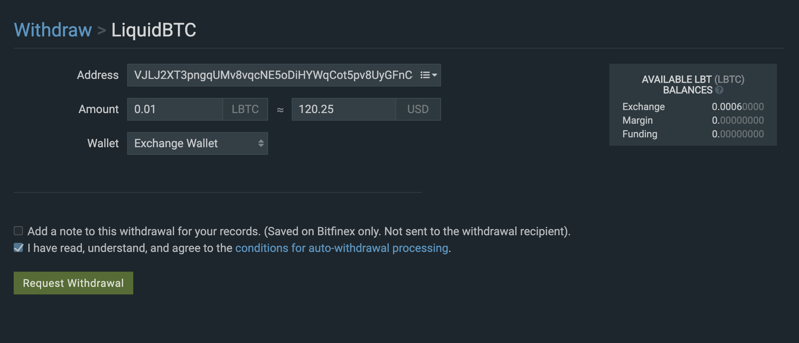
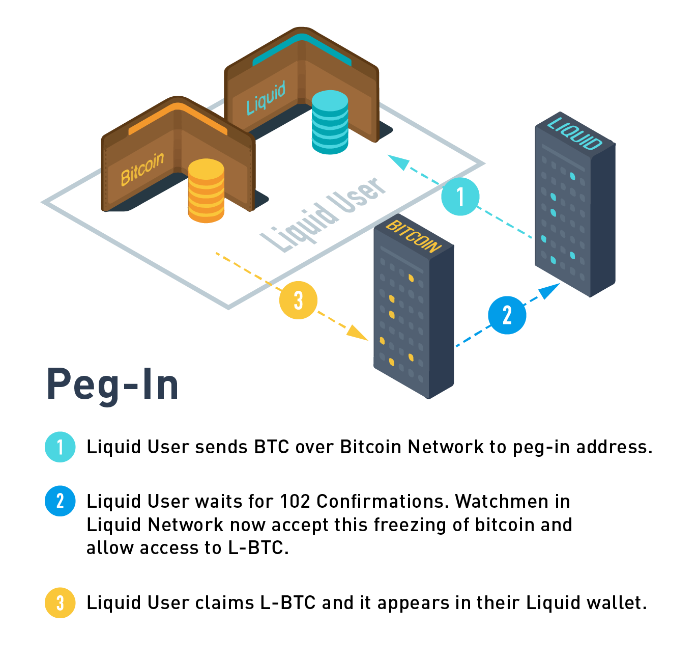

How to Acquire Liquid Bitcoin (L-BTC)¶
Liquid Bitcoin (L-BTC) are required to perform most functions on the Liquid Network.
Although all L-BTC must be created on the Liquid Network via a peg-in, there are a few different ways to obtain L-BTC so that you can start transacting on the Liquid Network:
Method |
Required |
Level |
Notes |
|---|---|---|---|
Bitcoin exchange |
Exchange account |
Beginner |
Exchanges with L-BTC available: Bitfinex, The Rock Trading, Sideshift AI, BTSE. |
Informal swaps |
Beginner |
Only suitable for small amounts of L-BTC due to risk; example venues: Liquid Community Telegram group. |
|
Peg-in |
Advanced |
Requires moderate technical proficiency; must wait 102 Bitcoin blocks to complete the peg-in; need a Liquid member to peg-out. |
Warning
L-BTC peg-outs must be performed via a Liquid Member, e.g. Bitfinex. Don’t acquire L-BTC unless you are sure you have a method of converting them back to BTC.
Some guides are shown below, explaining:
How to Exchange BTC for L-BTC on Bitfinex¶
Bitfinex provide a 1:1 BTC:L-BTC conversion service on their Wallet page.
Note
Bitfinex have a minimum withdrawal size of 20 USD equivalent and this method is not available for US residents.
Register an account at Bitfinex.
Send bitcoin to your Bitfinex “Exchange Wallet” from a wallet of your choice.
Wait for at least 3 confirmations.
Go to your Wallets page. Your bitcoin should show in the Balances section under the Exchange Wallet column.
Still on the Wallets page, enter the following details into the Currency Conversions section:
Amount: <amount of bitcoin you would like to convert> From: BTC To: LBTC From Wallet: Exchange To Wallet: Exchange
Double-check the details are correct, then click Convert.
At the bottom of the Wallets page, you should now see a new row for “LiquidBTC” and a balance under Exchange Wallet. You’ve acquired your first L-BTC!
To withdraw L-BTC to a non-custodial wallet (e.g. Blockstream Green), go to your Withdraw page, scroll down and select on LiquidBTC.
You’ll be taken to a Withdraw > LiquidBTC page.
Enter a receive address from your Liquid wallet, withdrawal amount, select Exchange Wallet, check that you have read the conditions, and then click Request Withdrawal.

Complete the withdrawal confirmation steps.
After Bitfinex have processed the withdrawal, the L-BTC will be settled in a prompt two minutes and you should see your balance updated in your Liquid wallet. Your funds will be immediately available for spending, no need to wait for multiple confirmations.
The process for converting L-BTC to BTC on Bitfinex is the same as above but in reverse: deposit L-BTC, convert L-BTC to BTC, then withdraw your BTC to a Bitcoin wallet.
How to Peg-In Liquid Bitcoin (L-BTC) with Elements Core¶
This guide requires a moderate level of technical proficiency. Some users may prefer to go use one of the exchange methods for a more convenient solution.
Warning
L-BTC peg-outs must be performed via a Liquid Member, e.g. Bitfinex. Don’t peg-in L-BTC unless you are sure you have a method of converting them back to BTC.

Download and install Bitcoin Core (use Node Launcher for fast setup).
Run and sync your Bitcoin node (could take a day or more).
Follow the Liquid Quickstart Guide.
Run and sync your Liquid node.
In the Elements Core client, open the console window by clicking Help/Debug Window -> Console tab.
In the console, get a peg-in address using the following command.
getpeginaddressSave the mainchain_address and claim_script values for use later.
Send Bitcoin to the mainchain_address and keep a copy of the transaction id returned.
Wait for 102 confirmations on the Bitcoin chain, which will take on average around 17 hours with a sufficient Bitcoin miner fee. You can track your transaction’s progress on Blockstream Explorer.
Once the transaction has received 102 confirmations, go to your Bitcoin Core client, and open the console by clicking Help/Debug Window -> Console tab.
Enter the following two commands and record the results, you will need them to claim the peg-in on Liquid.
getrawtransaction <yourTXID>
gettxoutproof '["'<yourTXID>'"]'
Go back to the Elements Core client and open the console window as before. Enter the following command, using the result from
getrawtransaction <yourTXID>as<raw>and the result fromgettxoutproof '["'<yourTXID>'"]'as<proof>.claimpegin <raw> <proof> <claim_script>
The claim transaction should confirm in around two minutes. Once confirmed, you should see your L-BTC balance updated in your Liquid Core client.
Congratulations! You’re now the proud owner of some Liquid Bitcoin. These can be transferred to other Liquid users, exchanges and other businesses that support Liquid, or used to cover the transaction fee when creating and transferring Issued Assets.